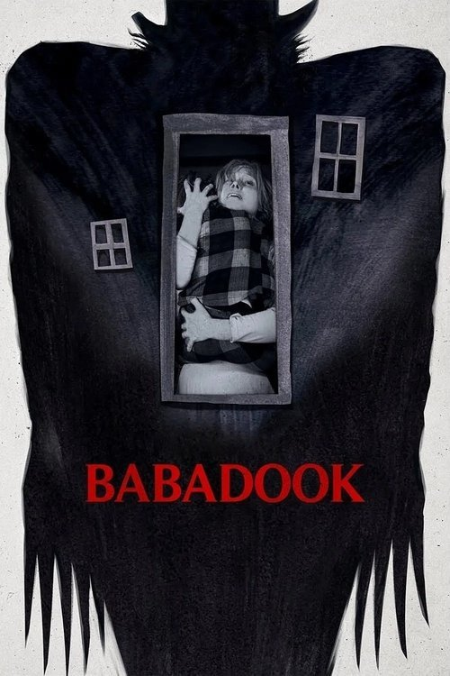

Babadook (2014)
Sinopsis Rápida
Sinopsis Detallada
Seis años después de la violenta muerte de su marido, Amelia continúa perdida intentando educar a Samuel, su hijo de seis años, que vive aterrorizado por un monstruo que se le aparece en sueños y amenaza con matarlos. Cuando un inquietante libro de cuentos llamado “The Babadook” aparece en su casa, Samuel se muestra convencido de que el Babadook es la criatura sobre la que ha estado soñando. Cuando sus alucinaciones entran en una espiral fuera de control, se vuelve impredecible y violento. Amelia, muy asustada por el comportamiento de su hijo, se ve forzada a medicarle. Pero cuando comienza a vislumbrar una presencia siniestra a su alrededor, Amelia poco a poco se da cuenta de que aquello sobre lo que Samuel la ha estado advirtiendo puede ser real.